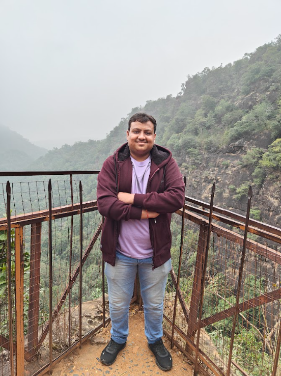

Rohit Chandak

Summary
I am a hardworking, sincere, enthusiastic, and focused person. I am
presently pursuing my bachelor's in Computer Science Engineering.Coding is
my Passion.
Education
-
Shri Ramdeobaba College of Engineering and Management Nagpur Bachelor in
Computer Science and Engineering (Data Science) Jan 2021 - May 2024
CGPA - 10.00
Work Expeirence
Vice President | Geeks For Geeks Rcoem Student Chapter Dec 2021 – Dec 2022
-
Continuously updated a leadership resume and honed skills by
participating in various management trainings
-
Worked with departments across the company, including marketing and
project management, in developing new ideas, initiatives, products, and
services.
Research Intern in NLP | RCOEM Link Sep 2022 – Feb 2023
-
Got a feel for the work environment and learned some NLP useful
libraries.
- Got First Prize and the best Research Intern Award.
Member | Intel Student Developer Club Rcoem Link Jan 2021 – Jan 2023
- Worked for various different roles in the club.
- Conducted various online events and meetings.
Problem Setter| Code chef Chapter Rcoem Dec 2021 – Aug 2022
- Main role was to look at the programming part in the club.
-
Active participant in various events conducted and was head of some
events.
Skills and Hobbies
Programming Languages and Technologies
Python | NLP | Html/CSS | Data Analyst | VsCode | DSA | Competitive
Programming
Soft Skills and Hobbies
Leadership | Public Speaking | Content Writing | Team-Work | Cricket |
Cooking | Discussion
Professionals Certificates
- Skill Specialization By IBM (Coursera)
- Python Essential for CSE by Cisco
Contact Me
Projects